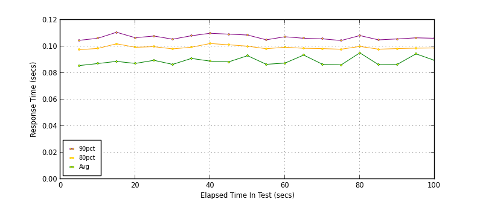
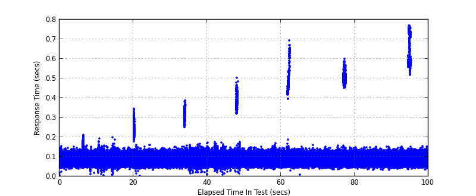
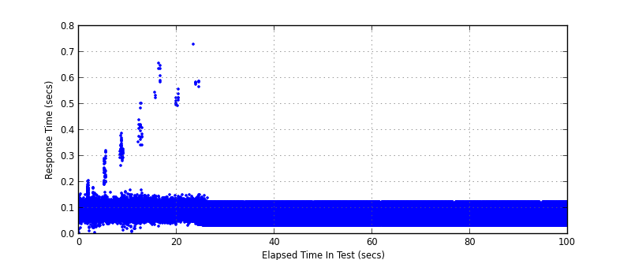
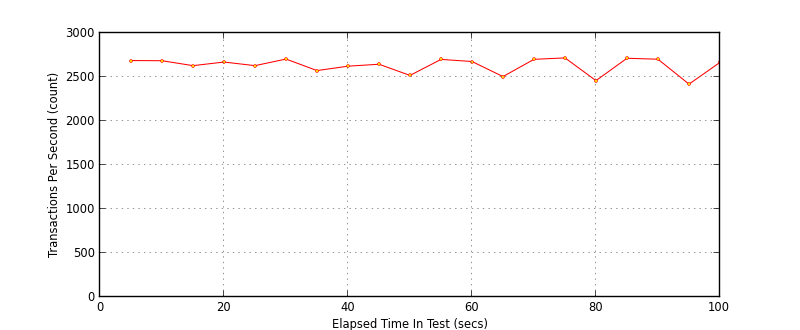

Performance Results Report
Summary
transactions: 263399
errors: 0
run time: 100 secs
rampup: 0 secs
test start: 2016-12-20 15:45:18
test finish: 2016-12-20 15:46:58
time-series interval: 5 secs
workload configuration:
| group name | threads | script name |
|---|
| user_group-1 | 20 | v_get.py |
| user_group-2 | 20 | v_get.py |
| user_group-3 | 20 | v_get.py |
| user_group-4 | 20 | v_get.py |
| user_group-5 | 20 | v_get.py |
| user_group-6 | 20 | v_get.py |
| user_group-7 | 20 | v_get.py |
| user_group-8 | 20 | v_get.py |
| user_group-9 | 20 | v_get.py |
| user_group-10 | 20 | v_get.py |
| user_group-11 | 20 | v_get.py |
| user_group-12 | 20 | v_get.py |
All Transactions
Transaction Response Summary (secs)
| count | min | avg | 80pct | 90pct | 95pct | max | stdev |
|---|
| 263399 | 0.004 | 0.089 | 0.099 | 0.107 | 0.114 | 0.771 | 0.031 |
Interval Details (secs)
| interval | count | rate | min | avg | 80pct | 90pct | 95pct | max | stdev |
|---|
| 1 | 13438 | 2687.60 | 0.007 | 0.086 | 0.098 | 0.105 | 0.111 | 0.155 | 0.015 |
| 2 | 13425 | 2685.00 | 0.013 | 0.087 | 0.098 | 0.106 | 0.114 | 0.212 | 0.018 |
| 3 | 13147 | 2629.40 | 0.007 | 0.089 | 0.102 | 0.111 | 0.118 | 0.199 | 0.017 |
| 4 | 13354 | 2670.80 | 0.032 | 0.087 | 0.099 | 0.107 | 0.113 | 0.149 | 0.015 |
| 5 | 13147 | 2629.40 | 0.004 | 0.090 | 0.100 | 0.108 | 0.116 | 0.344 | 0.026 |
| 6 | 13524 | 2704.80 | 0.035 | 0.086 | 0.098 | 0.105 | 0.112 | 0.145 | 0.015 |
| 7 | 12869 | 2573.80 | 0.032 | 0.091 | 0.099 | 0.108 | 0.116 | 0.388 | 0.035 |
| 8 | 13118 | 2623.60 | 0.015 | 0.089 | 0.102 | 0.110 | 0.117 | 0.167 | 0.016 |
| 9 | 13229 | 2645.80 | 0.009 | 0.088 | 0.101 | 0.109 | 0.116 | 0.177 | 0.016 |
| 10 | 12593 | 2518.60 | 0.017 | 0.093 | 0.100 | 0.109 | 0.118 | 0.503 | 0.044 |
| 11 | 13504 | 2700.80 | 0.034 | 0.087 | 0.098 | 0.105 | 0.111 | 0.153 | 0.015 |
| 12 | 13384 | 2676.80 | 0.035 | 0.087 | 0.099 | 0.107 | 0.114 | 0.170 | 0.015 |
| 13 | 12528 | 2505.60 | 0.031 | 0.093 | 0.099 | 0.106 | 0.114 | 0.695 | 0.058 |
| 14 | 13508 | 2701.60 | 0.009 | 0.087 | 0.098 | 0.106 | 0.112 | 0.162 | 0.015 |
| 15 | 13586 | 2717.20 | 0.037 | 0.086 | 0.098 | 0.104 | 0.111 | 0.150 | 0.014 |
| 16 | 12296 | 2459.20 | 0.036 | 0.095 | 0.100 | 0.108 | 0.116 | 0.601 | 0.060 |
| 17 | 13567 | 2713.40 | 0.032 | 0.086 | 0.098 | 0.105 | 0.111 | 0.149 | 0.014 |
| 18 | 13512 | 2702.40 | 0.032 | 0.086 | 0.098 | 0.106 | 0.112 | 0.152 | 0.015 |
| 19 | 12097 | 2419.40 | 0.037 | 0.094 | 0.099 | 0.106 | 0.115 | 0.771 | 0.069 |
| 20 | 13333 | 2666.60 | 0.035 | 0.089 | 0.099 | 0.106 | 0.113 | 0.758 | 0.040 |
Graphs
Response Time: 5 sec time-series

Response Time: raw data (all points)

Throughput: 5 sec time-series

Custom Timer: GET
Timer Summary (secs)
| count | min | avg | 80pct | 90pct | 95pct | max | stdev |
|---|
| 263159 | 0.007 | 0.073 | 0.089 | 0.098 | 0.105 | 0.732 | 0.021 |
Interval Details (secs)
| interval | count | rate | min | avg | 80pct | 90pct | 95pct | max | stdev |
|---|
| 1 | 13438 | 2687.60 | 0.007 | 0.087 | 0.099 | 0.107 | 0.115 | 0.205 | 0.017 |
| 2 | 13425 | 2685.00 | 0.015 | 0.088 | 0.100 | 0.107 | 0.114 | 0.388 | 0.022 |
| 3 | 13147 | 2629.40 | 0.010 | 0.088 | 0.100 | 0.108 | 0.114 | 0.503 | 0.021 |
| 4 | 13354 | 2670.80 | 0.031 | 0.087 | 0.098 | 0.106 | 0.112 | 0.658 | 0.022 |
| 5 | 13147 | 2629.40 | 0.032 | 0.087 | 0.098 | 0.105 | 0.111 | 0.732 | 0.022 |
| 6 | 13524 | 2704.80 | 0.033 | 0.070 | 0.087 | 0.096 | 0.103 | 0.147 | 0.020 |
| 7 | 12869 | 2573.80 | 0.033 | 0.067 | 0.085 | 0.090 | 0.099 | 0.124 | 0.019 |
| 8 | 13118 | 2623.60 | 0.033 | 0.067 | 0.085 | 0.090 | 0.100 | 0.124 | 0.019 |
| 9 | 13229 | 2645.80 | 0.033 | 0.067 | 0.085 | 0.090 | 0.099 | 0.124 | 0.019 |
| 10 | 12593 | 2518.60 | 0.033 | 0.067 | 0.085 | 0.090 | 0.099 | 0.124 | 0.019 |
| 11 | 13504 | 2700.80 | 0.033 | 0.067 | 0.085 | 0.090 | 0.100 | 0.124 | 0.019 |
| 12 | 13384 | 2676.80 | 0.033 | 0.067 | 0.085 | 0.090 | 0.100 | 0.124 | 0.019 |
| 13 | 12528 | 2505.60 | 0.033 | 0.067 | 0.085 | 0.090 | 0.099 | 0.124 | 0.019 |
| 14 | 13508 | 2701.60 | 0.033 | 0.067 | 0.085 | 0.090 | 0.099 | 0.124 | 0.019 |
| 15 | 13586 | 2717.20 | 0.033 | 0.067 | 0.085 | 0.090 | 0.099 | 0.124 | 0.019 |
| 16 | 12296 | 2459.20 | 0.033 | 0.067 | 0.085 | 0.090 | 0.099 | 0.124 | 0.019 |
| 17 | 13567 | 2713.40 | 0.033 | 0.067 | 0.085 | 0.090 | 0.099 | 0.124 | 0.019 |
| 18 | 13512 | 2702.40 | 0.033 | 0.067 | 0.085 | 0.090 | 0.100 | 0.124 | 0.019 |
| 19 | 12097 | 2419.40 | 0.033 | 0.067 | 0.085 | 0.090 | 0.100 | 0.124 | 0.019 |
| 20 | 13333 | 2666.60 | 0.033 | 0.067 | 0.085 | 0.090 | 0.099 | 0.124 | 0.019 |
Graphs
Response Time: 5 sec time-series

Response Time: raw data (all points)

Throughput: 5 sec time-series
